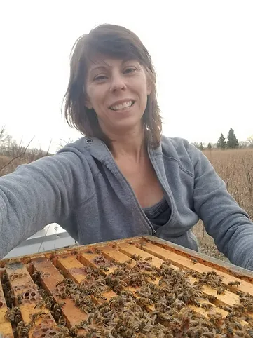

Speaker: Mrs. Rebecca Melton Masterman, PhD.
Meeting Details
- Date: November 17th, 2024
- Time: 7:30 PM ET (Eastern Time)
- Topic: TBA
Speaker Biography
Rebecca Masterman, PhD currently writes monthly for Bee Culture Magazine and is a Beekeeping Today Podcast co-host. She led the UMN Bee Squad from 2013–2020 and now supports the MN Extension Apiculture program as a coordinator and leads the MN Honey Producers Habitat Committee.
Additional Information:
- Current Roles:
- Monthly writer for Bee Culture Magazine
- Co-host of Beekeeping Today Podcast
- Coordinator for MN Extension Apiculture program
- Leader of MN Honey Producers Habitat Committee
- Past Experience: Led the UMN Bee Squad from 2013–2020